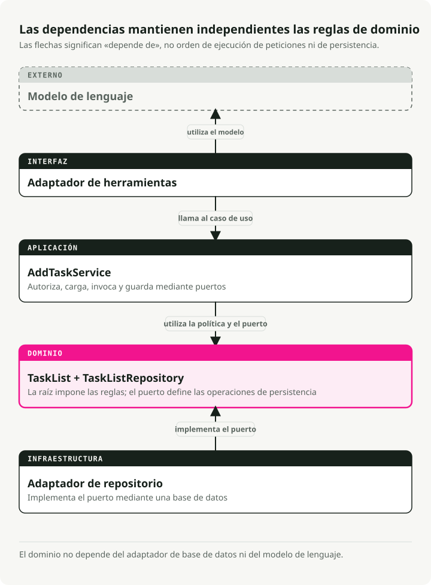
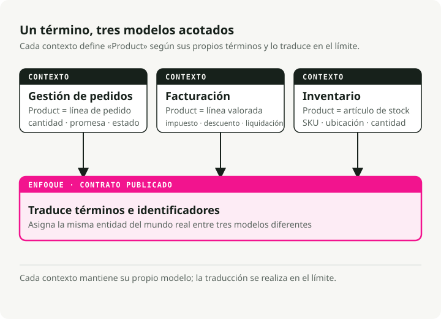
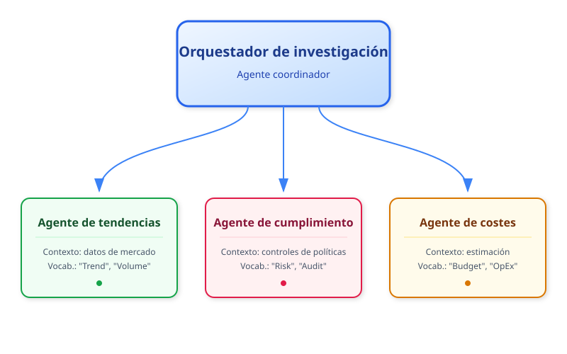
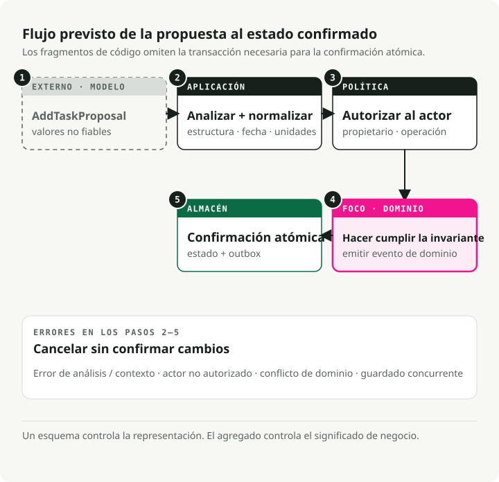
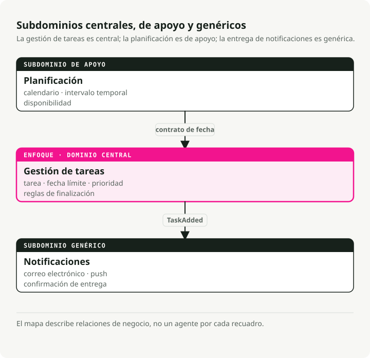

Traducción automática
Este artículo se tradujo automáticamente a partir de la versión original en inglés.
Domain-Driven Design para agentes de IA: contextos delimitados, herramientas y reglas de negocio
TL;DR
El domain-driven design (DDD) da a los equipos de agentes de IA un vocabulario compartido y límites claros entre subsistemas. Úsalo cuando tus prompts se han alejado del negocio y tus reglas están dispersas entre plantillas.

Por qué el domain-driven design importa para los agentes de IA
La mayoría de los proyectos de agentes no fallan porque el código sea malo. Fallan porque las personas que escriben prompts y las personas que realmente son responsables del proceso de negocio no consiguen ponerse de acuerdo sobre qué significa cada cosa. Compliance pide una "policy check" y recibe de vuelta un método process_data(). Nadie sabe qué hace, así que los requisitos se desvían y el sistema se rigidiza.
DDD corrige esto poniendo el dominio de negocio en el centro. No el esquema de base de datos. No la plantilla de prompt. El proceso real del mundo que intentas modelar. Los efectos prácticos:
- Lenguaje compartido. Producto, operaciones e ingeniería usan las mismas palabras. Cuando compliance dice "refund request", eso es lo que aparece en tu código, prompts y documentación.
- Alcance enfocado. Construyes lo que importa: los flujos de trabajo principales y las reglas de las que alguien es realmente responsable. Menos glue code que se rompe cuando cambian los requisitos.
- Adaptabilidad. Cuando cambian las políticas, actualizas una parte bien definida en lugar de rastrear un monolito.
Esto importa especialmente en dominios donde las reglas cambian a menudo: finanzas, sanidad, operaciones reguladas. DDD te da una posibilidad real de seguir el ritmo.
Bloques estratégicos
DDD es un conjunto de patrones más que una única idea. Suele dividirse en dos mitades:
- Diseño estratégico: la parte de "visión global". Definir límites, equipos y cómo se comunican los sistemas. Esto es esencial para sistemas multiagente.
- Diseño táctico: los patrones a nivel de código (Entities, Aggregates) que mantienen limpia la lógica interna de tu agente.
Los conceptos de abajo son los que realmente usarás en el día a día.
Lenguaje ubicuo
El vocabulario compartido que aparece en todas partes: reuniones, documentación, prompts, nombres de métodos. No hay una capa de traducción entre el "lenguaje de negocio" y el "lenguaje del código".
Si compliance dice "policy check", tu método es run_policy_check(), no process_data(). Si los médicos dicen "admit patient", tú escribes admit_patient(), no add_user().
class PatientRegistry:
def admit_patient(self, patient_id: str) -> None:
"""Admit a patient to the registry - term used by medical staff."""
...
Cuando el lenguaje del código coincide con el lenguaje de la sala, los cambios de requisitos aparecen como renombrados evidentes en un único sitio. Dejas de discutir qué se suponía que hacía process_data.
Contextos delimitados
Los sistemas grandes necesitan límites explícitos. ¿Por qué? Porque la misma palabra significa cosas distintas en distintas partes del negocio.
Piensa en "product" en e-commerce. En el contexto de Inventory, un product es un elemento de catálogo con SKUs y recuentos de stock. En el contexto de Billing, es una línea con reglas de precio y cálculos de impuestos. En Order Management, es una cantidad y una promesa de entrega.
Los contextos delimitados permiten que cada subdominio tenga su propia definición sin conflicto. Las capas de traducción o las interfaces los conectan cuando necesitan hablar entre sí.

Esto mantiene cada modelo pequeño y evita un único objeto "product" gigante que tenga que satisfacer a tres equipos a la vez.
Entidades y value objects
Estos son los bloques básicos de tu modelo de dominio.
Las entities tienen una identidad que persiste en el tiempo. Una Task con ID 123 es la misma tarea aunque cambies su descripción, estado o fecha límite. Dos entities son iguales si tienen el mismo ID, independientemente de sus atributos.
from pydantic import BaseModel
class SupportTicket(BaseModel):
ticket_id: str # This is the identity
customer: str
issue: str
status: str = "OPEN"
def close(self) -> None:
if self.status != "OPEN":
raise ValueError("Ticket already closed")
self.status = "CLOSED"
Los value objects no tienen identidad. Están definidos por completo por sus atributos. Dos objetos TimeSlot con la misma hora de inicio y fin son intercambiables. Los value objects son inmutables; en lugar de mutar uno, creas uno nuevo.
from pydantic import BaseModel
class TimeSlot(BaseModel):
start: str # e.g., "2025-10-18 09:00"
end: str # e.g., "2025-10-18 10:00"
@property
def duration(self) -> int:
# Compute duration from start to end
...
Usa entities para cosas que tienen ciclos de vida (Order, User, AgentSession). Usa value objects para descripciones y medidas (EmailAddress, Priority, Location).
Aggregates
Los aggregates son agrupaciones de entities y value objects relacionados que se tratan como una sola unidad. Dentro de un aggregate, las reglas de negocio deben cumplirse siempre. Ese es el objetivo.
Todo aggregate tiene una aggregate root, la entity que controla el acceso a todo lo que hay dentro. ¿Quieres modificar algo del aggregate? Hazlo a través de la root. La root aplica los invariants para que el aggregate no pueda quedar en un estado roto.
from datetime import date
from pydantic import BaseModel, Field
class Task(BaseModel):
id: str
description: str
completed: bool = False
class Plan(BaseModel): # This is the aggregate root
id: str
tasks: list[Task] = Field(default_factory=list)
def add_task(self, task: Task) -> None:
# Business rule enforced here: no duplicate task IDs
if any(t.id == task.id for t in self.tasks):
raise ValueError("Task ID already exists")
self.tasks.append(task)
El código externo nunca toca directamente la lista tasks. Siempre llama a add_task(). Eso es lo que garantiza que no pueda violarse la regla de "no IDs duplicados". Cuando guardas en una base de datos, normalmente guardas todo el aggregate de una vez.
Repositories
Los repositories ocultan la capa de persistencia. Desde el punto de vista del dominio, llamas a save(plan) y get(plan_id). El hecho de que esas llamadas acaben llegando a Postgres o Redis es problema de otra persona.
De aquí salen dos beneficios. Los tests pueden usar un repository en memoria en lugar de hacer mocking de llamadas a base de datos. Y cuando acabes cambiando SQLite por algo más pesado, las reglas de negocio no se mueven.
from abc import ABC, abstractmethod
from pydantic import BaseModel, Field
class Task(BaseModel):
id: str
description: str
completed: bool = False
class Plan(BaseModel):
id: str
tasks: list[Task] = Field(default_factory=list)
class PlanRepository(ABC):
"""Domain layer defines the interface."""
@abstractmethod
def save(self, plan: Plan) -> None:
...
@abstractmethod
def get(self, plan_id: str) -> Plan | None:
...
class InMemoryPlanRepository(PlanRepository):
"""Infrastructure layer provides the implementation."""
def __init__(self) -> None:
self.storage: dict[str, Plan] = {}
def save(self, plan: Plan) -> None:
self.storage[plan.id] = plan
def get(self, plan_id: str) -> Plan | None:
return self.storage.get(plan_id)
Tu código de dominio solo conoce PlanRepository (la interfaz). La capa de infraestructura conecta la implementación real.
Eventos de dominio
Los eventos de dominio capturan cosas importantes que han ocurrido en tu sistema. El nombre va en pasado (OrderPlaced, TaskCompleted, PaymentFailed) porque describen hechos, no comandos.
Los eventos hacen explícitos los efectos secundarios implícitos. En lugar de que un módulo llame directamente a otro cuando ocurre algo, el dominio lanza un evento. Otras partes del sistema se suscriben y reaccionan de forma independiente.
from datetime import datetime
from pydantic import BaseModel
class TaskCompleted(BaseModel):
task_id: str
completed_at: datetime
Cuando una tarea termina, emites TaskCompleted. Un servicio de notificaciones podría escuchar este evento y enviar un email. Un servicio de reporting podría registrarlo para analítica. Lo importante: el aggregate de tarea no necesita saber nada sobre emails ni analítica. Simplemente anuncia lo que ha pasado.
Así es como la comunicación entre contextos sigue desacoplada. Además, encaja de forma natural con sistemas multiagente, ya que los agentes ya reaccionan entre sí mediante eventos.
Traducir DDD a arquitecturas de agentes
Los sistemas de agentes reales tienen flujos de trabajo de varios pasos, salidas de LLM que fallan un porcentaje de las veces y requisitos que cambian cada trimestre. Resulta que los patrones de DDD encajan bien con esos problemas.
Los contextos delimitados se convierten en agentes o skills
Cada agente (o capacidad principal) es un contexto delimitado. Un orquestador de research podría coordinar tres agentes especializados:
- Trends Agent — recopila datos de mercado usando su propio vocabulario y herramientas
- Compliance Agent — ejecuta policy checks con terminología regulatoria
- Cost Agent — estima gastos con reglas específicas de finanzas
Cada uno tiene su propio modelo, terminología e invariants. Se comunican mediante interfaces o eventos bien definidos.

Incluso en un sistema de un solo agente, podrías definir contextos internos. Un módulo de Planning y un módulo de Execution, cada uno con su propio modelo de dominio.
Los prompts respetan el lenguaje ubicuo
Usa términos del dominio en los system prompts, descripciones de herramientas y firmas de funciones. Si los expertos de compliance dicen "policy check", esa frase exacta debe estar en tus prompts y en tu código. La ventaja es muy práctica: cuando el trace de un agente muestra run_policy_check, el equipo de compliance puede leerlo sin traductor.
El estado se convierte en entidades explícitas
Los LLM suelen ser stateless, pero los agentes reales mantienen bastante estado: sesiones de conversación, objetivos, resultados intermedios, salidas de herramientas. Modela estas cosas como entities o value objects:
- entity
ConversationSessioncon ID e historial de mensajes - entity
Taskque representa unidades de trabajo - value object
ToolOutputpara resultados inmutables
Una vez que estos objetos son explícitos, puedes adjuntarles validación y reglas de negocio. Una entity Task puede negarse a completarse hasta que terminen sus dependencias, sin que esa regla viva en tres plantillas de prompt distintas.
Los aggregates expresan planes del agente
Una aggregate root Plan gobierna la lista de tareas y aplica los límites que importan al negocio. Cuando un LLM propone añadir 50 tareas y tu política es 10, el aggregate rechaza el exceso. Cuando sugiere trabajo duplicado, el aggregate también lo rechaza. El modelo puede ser entusiasta; el dominio sigue siendo coherente.
Los eventos de dominio impulsan la orquestación
Los agentes lanzan eventos como ResearchCompleted, ThresholdExceeded o PolicyViolationDetected. Otros agentes o servicios se suscriben y reaccionan. Nada está cableado de forma rígida, y eso es lo que hace barato añadir un nuevo listener (o un nuevo agente).
Las reglas de negocio envuelven las acciones de IA
Las salidas del LLM pasan por servicios de dominio o métodos de entities en lugar de ir directas a la base de datos. Si un modelo sugiere un reembolso por encima de los límites de la política, tu RefundRequest lo valida y lo rechaza. El LLM puede improvisar; las reglas de negocio tienen la última palabra.
La Anti-Corruption Layer (ACL)
Un LLM es probabilístico y a veces se equivoca de formas sorprendentes. Tu modelo de dominio tiene que seguir siendo determinista. No pueden encontrarse directamente.
Ese es el trabajo de la Anti-Corruption Layer (ACL).

La ACL se sitúa entre el modelo y el dominio. Traduce la salida en bruto del LLM a los tipos estrictos que espera tu dominio.
- Ingest texto o JSON en bruto del LLM.
- Validate estructura y tipos con modelos de Pydantic.
- Sanitize valores (nada de precios negativos, transacciones fechadas en el futuro, etc.).
- Translate DTOs (Data Transfer Objects) a entities de dominio.
Si la validación falla, la ACL rechaza los datos y a menudo devuelve el error al LLM para que lo intente de nuevo. La idea es simple: solo los datos válidos tocan tu lógica de negocio central.
Ejemplo: un asistente de tareas modelado con DDD
Vamos a construir un asistente personal de tareas que gestione peticiones como "Recuérdame comprar leche mañana" o "¿Qué tengo en mi lista de tareas?". El recorrido aplica las piezas de DDD de arriba, una por una.
1. Mapear los contextos
Empieza dividiendo el problema en subdominios:
- Task Management — gestión de tareas pendientes y recordatorios (dominio principal)
- Scheduling — eventos de calendario y reuniones
- Notifications — envío de alertas y emails
Nos centraremos primero en Task Management. Los demás pueden evolucionar como contextos delimitados separados o agentes complementarios.

2. Hablar el mismo lenguaje
Elige el vocabulario con las personas que realmente son responsables del proceso (o usa el sentido común en una app personal): "task", "deadline", "reminder", "priority". Después usa esos términos exactos en plantillas de prompt, nombres de métodos y etiquetas de la UI. No hay una traducción "de negocio" aparte.
3. Capturar entities, value objects y eventos
Ahora modela los conceptos centrales:
- Entity:
Taskcon identidad (id) y estado mutable (completed) - Value object: enum
Priority(inmutable, definido por su valor) - Evento de dominio:
TaskCompletedEventpara señalar cuándo termina el trabajo
from datetime import datetime, date, timezone
from enum import Enum
from pydantic import BaseModel, Field
class Priority(Enum):
"""Value object: priority is defined by its value alone."""
LOW = 1
NORMAL = 2
HIGH = 3
class TaskCompletedEvent(BaseModel):
"""Domain event: announces a task was completed."""
task_id: str
time: datetime
class Task(BaseModel):
"""Entity: identity persists even as attributes change."""
id: str
description: str
created_at: datetime = Field(default_factory=lambda: datetime.now(timezone.utc))
due_date: date | None = None
priority: Priority = Priority.NORMAL
completed: bool = False
def mark_completed(self) -> TaskCompletedEvent:
"""Business rule: can't complete an already-completed task."""
if self.completed:
raise ValueError("Task is already completed.")
self.completed = True
return TaskCompletedEvent(task_id=self.id, time=datetime.now(timezone.utc))
La regla de negocio (no puedes completar una tarea ya completada) vive en el método de la entity, no en una plantilla de prompt.
4. Dar forma al aggregate
El TaskList es nuestra aggregate root. Contiene varias entities Task y aplica reglas de consistencia entre ellas. Todas las modificaciones pasan por los métodos de la root.
from datetime import date
from pydantic import BaseModel, Field
class Task(BaseModel):
id: str
description: str
due_date: date | None = None
completed: bool = False
class TaskList(BaseModel):
"""Aggregate root: enforces invariants across all tasks."""
owner: str
tasks: list[Task] = Field(default_factory=list)
def add_task(self, task: Task) -> None:
"""Business rule: no duplicate tasks on the same day."""
if any(
existing.description == task.description
and existing.due_date == task.due_date
for existing in self.tasks
):
raise ValueError("A similar task on that date already exists.")
self.tasks.append(task)
def get_pending(self) -> list[Task]:
"""Query helper: find tasks that aren't done yet."""
return [task for task in self.tasks if not task.completed]
TaskList.model_rebuild() # Resolve forward references for Pydantic.
El código externo nunca toca tasks directamente. Siempre pasa por add_task() u otro método de la root, que es lo que mantiene honesta la regla de "no duplicados".
5. Envolver la persistencia en un repository
El repository abstrae el almacenamiento. La capa de dominio no sabe si las tareas viven en memoria o en Postgres.
from pydantic import BaseModel, Field
class Task(BaseModel):
id: str
description: str
completed: bool = False
class TaskList(BaseModel):
owner: str
tasks: list[Task] = Field(default_factory=list)
TaskList.model_rebuild() # Resolve forward references for Pydantic.
class TaskRepository:
"""Abstracts task storage - in-memory implementation for simplicity."""
def __init__(self) -> None:
self._data: dict[str, TaskList] = {}
def get_task_list(self, owner: str) -> TaskList:
"""Retrieve a user's task list, or create a new empty one."""
return self._data.get(owner, TaskList(owner=owner))
def save_task_list(self, task_list: TaskList) -> None:
"""Persist changes to the task list."""
self._data[task_list.owner] = task_list
En producción, cambiarías esto por una implementación respaldada por base de datos (usando SQLAlchemy o Postgres directamente) sin tocar el código de dominio.
6. Ejecutar el flujo
Cuando un usuario hace una petición, el flujo es así:
from datetime import date, timedelta
from uuid import uuid4
from pydantic import BaseModel, Field
class Task(BaseModel):
id: str
description: str
due_date: date | None = None
completed: bool = False
class TaskList(BaseModel):
owner: str
tasks: list[Task] = Field(default_factory=list)
def add_task(self, task: Task) -> None:
if any(
existing.description == task.description
and existing.due_date == task.due_date
for existing in self.tasks
):
raise ValueError("A similar task on that date already exists.")
self.tasks.append(task)
class TaskRepository:
def __init__(self) -> None:
self._data: dict[str, TaskList] = {}
def get_task_list(self, owner: str) -> TaskList:
return self._data.get(owner, TaskList(owner=owner))
def save_task_list(self, task_list: TaskList) -> None:
self._data[task_list.owner] = task_list
TaskList.model_rebuild() # Resolve forward references for Pydantic.
# User says: "Remind me to buy milk tomorrow"
# (In reality, an LLM would parse this into structured data)
user_input = "Remind me to buy milk tomorrow"
intent = "add_task"
# Initialize repository
repo = TaskRepository()
if intent == "add_task":
# 1. Load the user's task list
task_list = repo.get_task_list(owner="User123")
# 2. Create a new task entity
task = Task(
id=str(uuid4()),
description="buy milk",
due_date=date.today() + timedelta(days=1),
)
# 3. Domain layer enforces business rules
try:
task_list.add_task(task)
repo.save_task_list(task_list)
print(f"Task '{task.description}' added for {task.due_date}.")
except Exception as exc:
print(f"Sorry, I couldn't add that task: {exc}")
Las capas permanecen separadas:
- Capa LLM parsea lenguaje natural a datos estructurados (intent + parameters)
- Capa de dominio aplica reglas de negocio mediante métodos de entities
- Capa de repository gestiona la persistencia sin filtrarse a la lógica de dominio
El LLM puede ser creativo al parsear, pero el dominio decide qué es consistente. Si intenta añadir una tarea duplicada, la aggregate root la rechaza. No necesitas una cláusula especial en tu prompt para ese caso.
Herramientas para dar vida al modelo
DDD no requiere frameworks especiales. Aun así, algunas herramientas hacen la implementación más fluida, especialmente para agentes de IA.
FastAPI
FastAPI encaja bien con las capas de DDD. Usa routers para separar contextos delimitados (/tasks, /schedule), modelos de Pydantic para validar requests y responses, e inyección de dependencias para conectar repositories.
Estructura tu proyecto en capas:
project/
├── domain/ # Pure business logic (entities, aggregates, value objects)
├── application/ # Use cases and command handlers
├── infrastructure/ # Repositories, databases, external APIs
└── interface/ # FastAPI routers and HTTP contracts
Esta organización en capas (a veces llamada "onion architecture") evita que los cambios se propaguen por toda la base de código. Cambiar la base de datos significa tocar infrastructure/ y nada más. Cambiar la UI significa tocar interface/ y nada más.
Pydantic y Pydantic AI
Pydantic aplica invariants y valida datos en tiempo de ejecución. Úsalo para entities, value objects y, sobre todo, para validar salidas de LLM.
Pydantic AI lleva esto un paso más allá: garantiza que las respuestas del LLM coincidan con tus esquemas de dominio. Define un AddTaskCommand con campos obligatorios, y Pydantic AI valida la salida JSON del modelo antes de que tu código la toque.
Instructor es otra opción aquí. Parchea clientes de OpenAI (y otros) para devolver directamente modelos de Pydantic, lo que es una forma ligera de implementar una Anti-Corruption Layer.
Librerías auxiliares de DDD
- DDDesign — proporciona clases base para entities, repositories y value objects construidas sobre Pydantic
- Protean — un framework completo para DDD, CQRS y event sourcing si quieres algo que venga con muchas funcionalidades listas para usar desde el principio
La mayoría de los desarrolladores de Python se saltan estas opciones y usan clases normales con Pydantic, pero merece la pena explorarlas en proyectos grandes.
Tooling orientado a eventos
Para eventos de dominio, considera:
- blinker — despachador de eventos ligero dentro del proceso
- redis-py Pub/Sub o RabbitMQ — para eventos distribuidos entre servicios o agentes
- patrones de eventos de asyncio — si ya trabajas en async
Los eventos son esenciales para la orquestación multiagente. Un agente emite ResearchCompleted; otros se suscriben y reaccionan. Ningún agente tiene que saber quién está escuchando.
Frameworks de agentes
LangChain, LangGraph, Haystack, Semantic Kernel, LlamaIndex, AutoGen, Google ADK, smolagents y CrewAI proporcionan estructura para flujos de trabajo de agentes. Úsalos en tu capa de aplicación o infraestructura, y envuélvelos en interfaces que pertenezcan a tu capa de dominio. Así, cambiar de framework pasa a ser un cambio acotado.
Testing
Una ventaja práctica de DDD: la capa de dominio se prueba sin tener que levantar toda la pila.
- PyTest para tests unitarios sobre entities y aggregates
- Fake repositories (en memoria) para tests de integración
- stubs de LLM que devuelven salidas predeterminadas
Tu código de dominio nunca debería necesitar un LLM real para ejecutar sus tests. El LLM es un detalle de implementación. Los tests validan las reglas de negocio.
Checklist para empezar
Un orden de trabajo práctico al arrancar un nuevo proyecto de agentes:
- Entrevista a expertos del dominio. Redacta el lenguaje ubicuo. Déjalo por escrito.
- Mapea los contextos delimitados. Dibuja los subdominios y marca dónde necesitan hablar entre sí. Empieza con un contexto principal.
- Modela entities y value objects. ¿Qué cosas tienen identidad? ¿Qué cosas son solo valores? Incorpora invariants en sus métodos.
- Define aggregate roots. Agrupa entities relacionadas bajo una root que aplique reglas de consistencia.
- Crea interfaces de repository. No implementes el almacenamiento todavía. Define solo
save()yget(). El dominio debe seguir sin saber dónde viven los datos. - Emite eventos de dominio. Para cambios significativos (pedido realizado, tarea completada), lanza eventos. Conecta listeners más adelante según sea necesario.
- Envuelve las salidas del LLM en esquemas. Usa modelos de Pydantic para aplicar contratos. El texto libre no debe filtrarse a tu dominio.
- Añade orquestación. Construye servicios de aplicación que coordinen agentes mediante comandos o eventos estructurados.
La regla que de verdad importa: empieza por el dominio, no por el stack tecnológico. Entiende primero el problema de negocio. Modélalo explícitamente. Luego incorpora las herramientas de IA para poner ese modelo a su servicio.